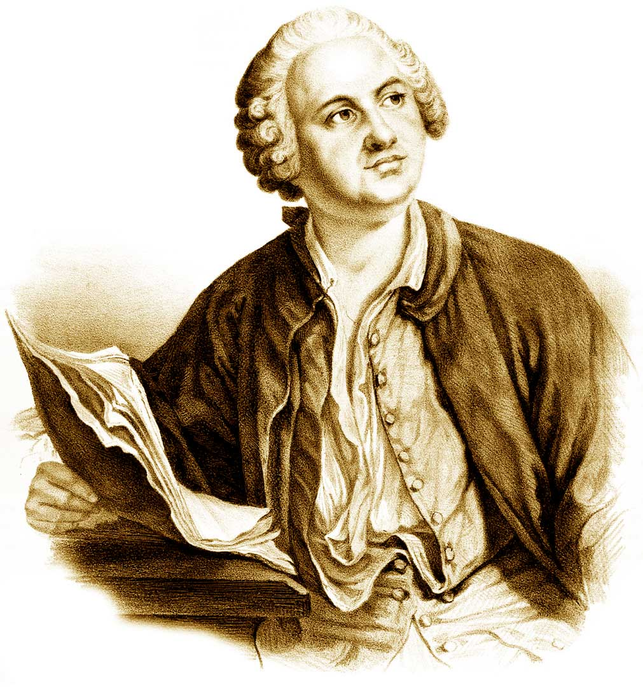
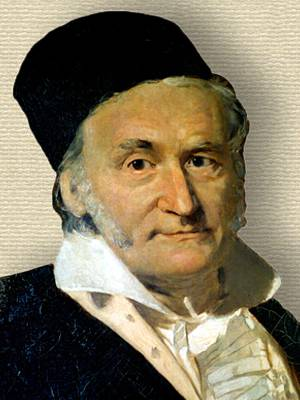
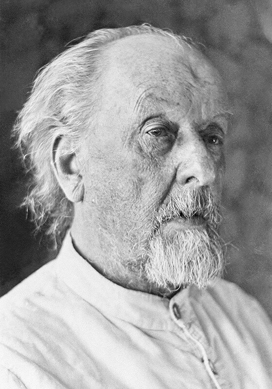
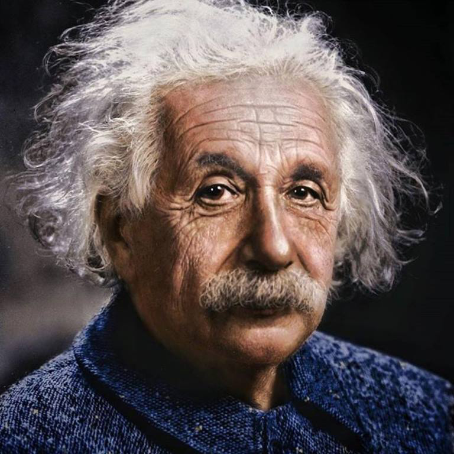

Ломоносов Михаил Васильевич
Михаил Ломоносов родился в деревне Мишанинской Архангелогородской губернии в 1711 году. Отец владел небольшим судном, на котором перевозил государственные и частные грузы, рыбачил и охотился. С детства Ломоносов помогал отцу и быстро всему учился — он должен был продолжить семейное дело.

В декабре 1730 года Михаил Ломоносов сбежал из дома и отправился вместе с рыбным обозом в Москву. Добрался через три недели и поступил в Славяно-греко-латинскую академию. Учился прилежно, поэтому уже через полгода его перевели из нижнего класса во второй, и в том же году — в третий.
Занятия в московской академии дали Ломоносову гуманитарное образование. Чтобы изучить естественные науки, он отправился в Киево-Могилянскую академию. Но, пробыв там всего несколько месяцев, молодой ученый вернулся в Москву. Отсюда Ломоносова направили в университет при Академии наук в Петербурге, где он и занялся естественными и техническими науками.
Яркий пример «универсального человека» (лат. homo universalis): энциклопедист, физик и химик (он вошёл в науку как первый химик, который дал физической химии определение, весьма близкое к современному, и предначертал обширную программу физико-химических исследований; его молекулярно-кинетическая теория тепла во многом предвосхитила современное представление о строении материи и многие фундаментальные законы, в числе которых одно из начал термодинамики).
Основоположник научного мореплавания и физической химии; заложил основы науки о стекле.
Астроном (открыл наличие атмосферы у планеты Венеры), приборостроитель, географ, металлург, геолог.
Сыграл основополагающую роль в формировании русского литературного языка (наряду с Н. М. Карамзиным и А. С. Пушкиным, и последовавшими за ними классиками русской литературы). Оценивается как великий реформатор русского языка, определивший пути его дальнейшего развития в статусе языка национального.
Он же художник, генеалог, историограф; поборник развития отечественных наук, экономики, образования (разработал проект Московского университета, впоследствии названного в его честь).
Статский советник, профессор химии (1745), действительный член Санкт-Петербургской Императорской академии наук (1745) и почётный член Королевской Шведской и Болонской академий наук.
Научную деятельность Михаил Ломоносов совмещал с общественной. Он разработал план по созданию университета в Москве, и в 1755 году императрица Елизавета Петровна подписала соответствующий указ о его учреждении. Так начала свое становление система высшего образования в России. Михаил Ломоносов заложил ее основы: доступность, автономность, фундаментальность, междисциплинарность, связь университета со средней школой.
Гаусс Карл Фридрих
Немецкий математик, механик, физик, астроном и геодезист. Считается одним из величайших математиков всех времён, «королём математиков».

Родился в немецком герцогстве Брауншвейг. Дед Гаусса был бедным крестьянином; отец, Гебхард Дитрих Гаусс, — садовником, каменщиком, смотрителем каналов; мать, Доротея Бенц, — дочерью каменщика. Будучи неграмотной, мать не записала дату рождения сына, запомнив только, что он родился в среду, за восемь дней до праздника Вознесения, который отмечается спустя 40 дней после Пасхи. В 1799 г. Гаусс вычислил точную дату своего рождения, разработав метод определения даты Пасхи на любой год.
В колледже Гаусс изучил труды Ньютона, Эйлера, Лагранжа. Уже там он сделал несколько открытий в теории чисел, в том числе доказал закон взаимности квадратичных вычетов. Лежандр, правда, открыл этот важнейший закон раньше, но строго доказать не сумел; Эйлеру это также не удалось. Кроме этого, Гаусс создал «метод наименьших квадратов» (тоже независимо открытый Лежандром) и начал исследования в области «нормального распределения ошибок».
С именем Гаусса связаны фундаментальные исследования почти во всех основных областях математики: в алгебре, теории чисел, дифференциальной и неевклидовой геометрии, математическом анализе, теории функций комплексного переменного, теории вероятностей, а также в аналитической и небесной механике, астрономии, физике и геодезии. «В каждой области глубина проникновения в материал, смелость мысли и значительность результата были поражающими. Гаусса называли „королём математиков“» (лат. Princeps mathematicorum).
Гаусс чрезвычайно строго относился к своим печатным трудам и никогда не публиковал даже выдающиеся результаты, если считал свою работу над этой темой незавершённой. На его личной печати было изображено дерево с несколькими плодами, под девизом: «Pauca sed matura» (немного, но зрело)[23]. Изучение архива Гаусса показало, что он медлил с публикацией ряда своих открытий, и в результате его опередили другие математики. Вот неполный перечень упущенных им приоритетов.
Гаусс дал первые строгие, даже по современным критериям, доказательства основной теоремы алгебры.
Он открыл кольцо целых комплексных гауссовых чисел, создал для них теорию делимости и с их помощью решил немало алгебраических проблем. Указал знакомую теперь всем геометрическую модель комплексных чисел и действий с ними.
Гаусс дал классическую теорию сравнений, открыл конечное поле вычетов по простому модулю, глубоко проник в свойства вычетов.
Гаусс продвинул теорию специальных функций, рядов, численные методы, решение задач математической физики. Создал математическую теорию потенциала.
Много и успешно занимался эллиптическими функциями, хотя почему-то ничего не публиковал на эту тему.
Циолковский Константин Эдуардович
Cоветский учёный-самоучка, разрабатывавший теоретические вопросы космонавтики, мыслитель эзотерической ориентации, занимавшийся философскими проблемами освоения космоса.
В своих научно-фантастических произведениях, будучи сторонником и пропагандистом идей освоения космического пространства, Циолковский предлагал заселить космическое пространство с использованием орбитальных станций, выдвинул идеи космического лифта, поездов на воздушной подушке. Считал, что развитие жизни на одной из планет когда-нибудь достигнет такого могущества и совершенства, которое позволит преодолеть силы тяготения и распространить жизнь по всей Вселенной. Необходимым этапом к расселению человечества в Космосе он считал возвышение интеллектуалов и выведение человечества, лишённого страстей, но с великим разумом, который позволит осуществить «рациональное умиротворённое существование». Эта эзотерическая утопия Циолковского послужила ведущим стимулом для разработки оснований ракетно-космической техники.

О своем рождении ученый писал: «Появился новый гражданин вселенной, Константин Циолковский». Это случилось 17 сентября 1857 года в селе Ижевское Рязанской губернии. Циолковский рос непоседой: лазал по крышам домов и деревьям, прыгал с большой высоты. Родители называли его «птицей» и «блаженным». Последнее касалось важной черты характера мальчика — мечтательности. Константин любил грезить вслух и «платил младшему брату», чтобы тот слушал его «бредни».
Когда Циолковскому было 14, отец заглянул в его мастерскую. В ней он обнаружил самодвижущиеся коляски, ветряные мельницы, самодельную астролябию и много других удивительных механизмов. Отец дал сыну денег и отправил поступать в Москву, в Высшее техническое училище (ныне МГТУ им. Баумана). До Москвы Константин доехал, но поступать в училище не стал. Вместо этого он записался в единственную городскую бесплатную библиотеку — Чертковскую — и углубился в самостоятельное изучение наук.
В 1887 году он написал небольшую повесть «На Луне», где описал ощущения человека, попавшего на земной спутник. Значительная часть предположений, высказанных им в работе, впоследствии оказалась верной. С 1892 года Циолковский работал преподавателем физики в епархиальном женском училище. Чтобы справляться со своим недугом, ученый смастерил «особую слуховую трубу», которую прижимал к уху, когда ученицы отвечали ему предмет.
В 1903 году Циолковский окончательно переключился на работы, связанные с освоением космоса. В статье «Исследование мировых пространств реактивными приборами» он впервые обосновал, что аппаратом для успешных космических полетов могла стать ракета. Ученый также разработал концепцию жидкостного ракетного двигателя. В частности, определил скорость, необходимую для выхода аппарата в Солнечную систему («вторая космическая скорость»). Циолковский занимался многими практическими вопросами космоса, которые позднее сформировали основу для советского ракетостроения. Он предложил варианты ракетного управления, систем охлаждения, конструкции сопла и системы подачи топлива.
С 1932 года к Циолковскому был приставлен личный врач — именно он выявил у ученого неизлечимое заболевание. Но Циолковский продолжал работать. Он говорил: чтобы закончить начатое, нужно еще 15 лет. Но этого времени у него не оказалось. «Гражданин вселенной» скончался 19 сентября 1935 года в возрасте 78 лет.
Эйнштейн Альберт
Физик-теоретик, один из основателей современной теоретической физики, лауреат Нобелевской премии по физике 1921 года, общественный деятель-гуманист. Эйнштейну принадлежит решающая роль в популяризации и введении в научный оборот новых физических концепций и теорий. В первую очередь это относится к пересмотру понимания физической сущности пространства и времени и к построению новой теории гравитации взамен ньютоновской. Эйнштейн также, вместе с Планком, заложил основы квантовой теории. Эти концепции, многократно подтверждённые экспериментами, образуют фундамент современной физики.

Альберт Эйнштейн родился 14 марта 1879 года в южно-германском городе Ульме, в небогатой еврейской семье.ачальное образование Альберт Эйнштейн получил в местной католической школе. По его собственным воспоминаниям, он в детстве пережил состояние глубокой религиозности, которое оборвалось в 12 лет. Через чтение научно-популярных книг он пришёл к убеждению, что многое из того, что изложено в Библии, не может быть правдой, а государство намеренно занимается обманом молодого поколения. Всё это сделало его вольнодумцем и навсегда породило скептическое отношение к авторитетам.
В течение всего XIX века материальным носителем электромагнитных явлений считалась гипотетическая среда — эфир. Однако к началу XX века выяснилось, что свойства этой среды трудно согласовать с классической физикой. С одной стороны, аберрация света наталкивала на мысль, что эфир абсолютно неподвижен, с другой — опыт Физо свидетельствовал в пользу гипотезы, что эфир частично увлекается движущейся материей. Опыты Майкельсона (1881), однако, показали, что никакого «эфирного ветра» не существует.
В 1892 году Лоренц и (независимо от него) Джордж Френсис Фицджеральд предположили, что эфир неподвижен, а длина любого тела сокращается в направлении его движения. Оставался, однако, открытым вопрос, почему длина сокращается в точности в такой пропорции, чтобы компенсировать «эфирный ветер» и не дать обнаружить существование эфира. Другим серьёзным затруднением был тот факт, что уравнения Максвелла не соответствовали принципу относительности Галилея, несмотря на то, что электромагнитные эффекты зависят только от относительного движения. Был исследован вопрос, при каких преобразованиях координат уравнения Максвелла инвариантны. Правильные формулы впервые выписали Лармор (1900) и Пуанкаре (1905), последний доказал их групповые свойства и предложил назвать преобразованиями Лоренца.
Пуанкаре также дал обобщённую формулировку принципа относительности, охватывающего и электродинамику. Тем не менее он продолжал признавать эфир, хотя придерживался мнения, что его никогда не удастся обнаружить. В докладе на физическом конгрессе (1900) Пуанкаре впервые высказывает мысль, что одновременность событий не абсолютна, а представляет собой условное соглашение («конвенцию»). Было высказано также предположение о предельности скорости света. Таким образом, в начале XX века существовали две несовместимые кинематики: классическая, с преобразованиями Галилея, и электромагнитная, с преобразованиями Лоренца.
Эйнштейн, размышляя на эти темы в значительной степени независимо, предположил, что первая есть приближённый случай второй для малых скоростей, а то, что считалось свойствами эфира, есть на деле проявление объективных свойств пространства и времени. Эйнштейн пришёл к выводу, что нелепо привлекать понятие эфира только для того, чтобы доказать невозможность его наблюдения, и что корень проблемы лежит не в динамике, а глубже — в кинематике. В упомянутой выше основополагающей статье «К электродинамике движущихся тел» он предложил два постулата: всеобщий принцип относительности и постоянство скорости света.